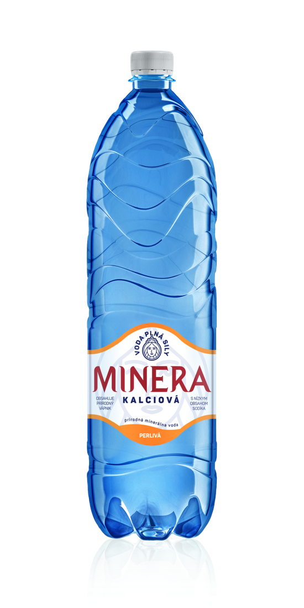
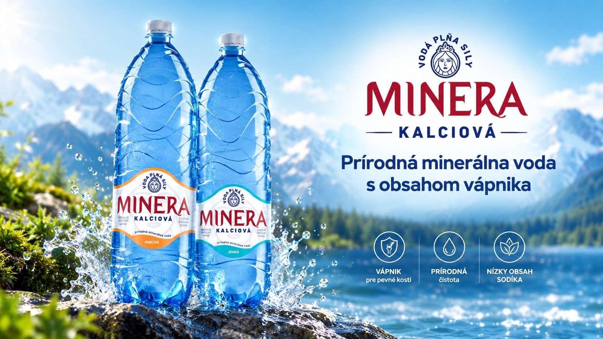
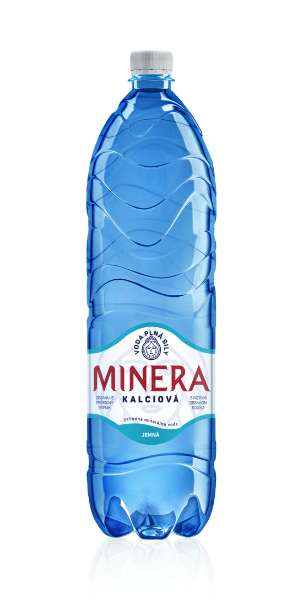
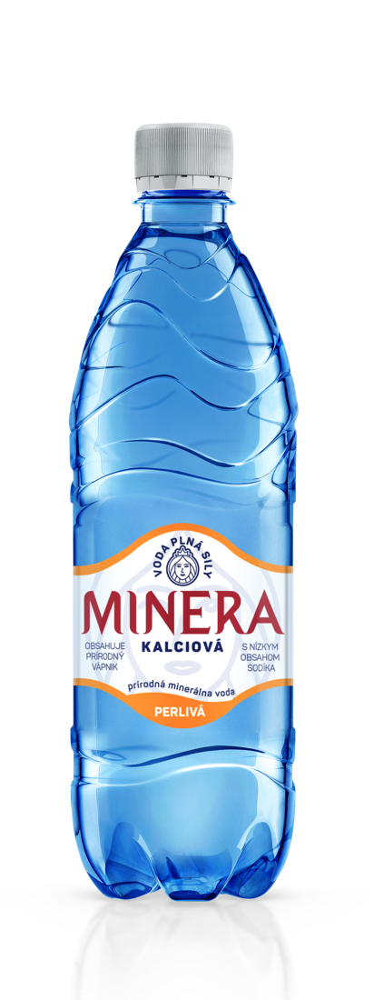
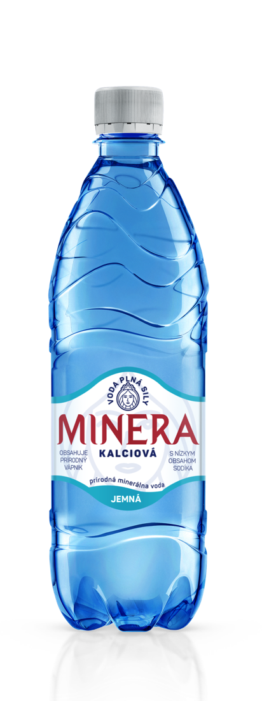
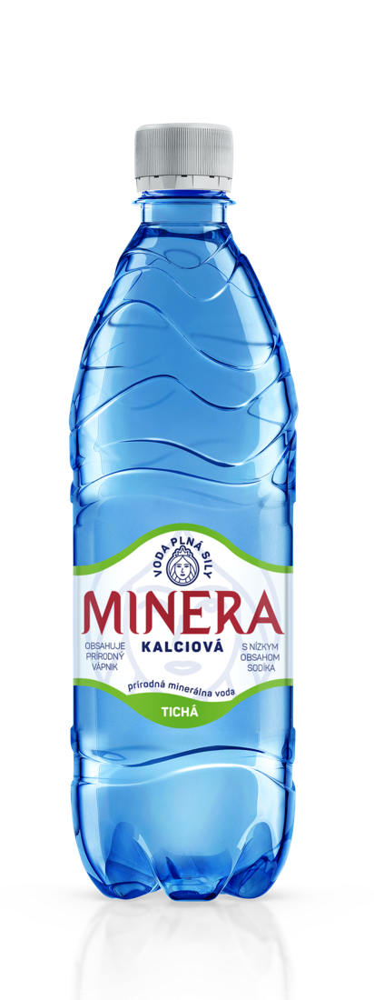

Minera kalciová perlivá
1,5 L



Ocenenie
MINERA, voda z prameňa, ktorý pochádza z úpätia Strážovských vrchov, obsahuje prírodný vápnik a nízky obsah sodíka, a preto priaznivo pôsobí na ľudský organizmus. Vďaka svojmu zloženiu si zaslúžila aj pomenovanie „voda plná sily“. Nízky obsah sodíka a stredná mineralizácia ju predurčujú na každodenné pitie.
Jej silu a kvalitu teraz ocenilo aj Ministerstvo pôdohospodárstva a rozvoja vidieka SR, ktoré jej udelilo Značku kvality 1. stupňa.
Viac o zloženíNaše produkty

1,5 L

1,5 L
1,5 L

0,5 L

0,5 L

0,5 L

Minerály
Vápnik je základným stavebným prvkom nielen kostí a zubov, ale všetkých buniek ľudského tela. Je dôležité dbať na jeho dostatočný príjem pomocou stravy, nakoľko si ho ľudské telo nedokáže samé tvoriť. Vápnik má dôležitú úlohu pri metabolizme a pozitívne ovplyvňuje chudnutie. Minerálna voda s prírodným obsahom kalcia neobsahuje nič, čo by dobrému vstrebávaniu vápnika bránilo. Prítomnosť hydrogénuhličitanov aj menšie množstvo horčíka môže využiteľnosť vápnika ešte podporiť. Ionizovaná, voľná forma vápnika v minerálnej vode je ideálna pre jednoduché vstrebávanie v tráviacom systéme. Vápnik pozitívne vplýva na činnosť nášho srdca a svalov. Správna hladina kalcia znižuje krvný tlak, cholesterol a upokojuje nervovú sústavu. Vápnikové minerálne vody sú preto výborným nekalorickým zdrojom vápnika.

Náš organizmus si nedokáže sám produkovať vápnik, a preto musí človek dbať na jeho pravidelný prísun. Minerálna voda MINERA obsahuje 256 mg vápnika v jednej 1,5 litrovej fľaši. To predstavuje cca 30 % odporúčanej výživovej dávky* pre dospelú osobu. Vďaka nízkemu obsahu sodíka, MINERA nezaťažuje srdcovo-cievny systém.
* Zdroj: Vestník Ministerstva zdravotníctva Slovenskej republiky. Odporúčané výživové dávky pre obyvateľstvo v Slovenskej republike (9. revízia)
Počas športu sa v našom tele zvyšuje vstrebávanie vápnika z čreva a na základe toho aj následná potreba jeho dopĺňania.

Pri zvýšenej fyzickej záťaži naše telo vyžaduje viac vápnika, ktorý využíva na zvýšenie svalovej sily.

Pri vylúčení mliečnych výrobkov zo každodennej stravy je dôležité myslieť na pravidelný prísun vápnika z iných plnohodnotných zdrojov.

Vápnik je kľúčovým minerálom pre ženy počas tehotenstva. Pomáha pri rozvoji a raste životne dôležitých štruktúr plodu.

Ľudia, ktorí na základe laktózovej intolerancie vylúčili zo stravy mliečne výrobky, by mali príjem vápnika nahradiť iným hodnotným zdrojom.

Vápnik spolupôsobí pri absorpcii tukov v črevách a znižuje celkový energetický príjem. Nedostatočný príjem vápnika sa preto môže spájať so zvyšovaním telesnej hmotnosti a telesného tuku.

Strava je základným zdrojom prísunu látok, ktoré telo potrebuje. Pri prevencii osteoporózy je kľúčová vyvážená výživa s dostatočným množstvom vápnika.

Každodenné pitie
Sodík pomáha v tele vytvárať zásadité prostredie, ktoré napomáha k udržaniu zdravia. Väčšiu časť dennej dávky sodíka prijmeme denne solením jedla, na každodenné pitie preto sa odporúča vyberať si vody s jeho nižším obsahom. Vysoký príjem sodíka zo soli zapríčiňuje zvýšený krvný tlak a núti obličky vylučovať viac tekutín. To môže mať za následok vznik kardiovaskulárnych porúch akými sú mŕtvica, infarkt, či akútne zlyhanie srdca. Rovnako aj niektoré prípady obezity môžu prameniť zo zvýšeného príjmu soli. Smernice v Spojených štátoch odporúčajú prijímať menej ako 2,3 g soli denne, čo predstavuje asi jednu čajovú lyžičku. Pre ľudí po päťdesiatke je to menej ako 1,5 g. Tieto odporúčania vychádzajú z výskumov, ktoré opisujú prepojenie rôznych ochorení na vysoký príjem soli.